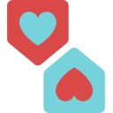
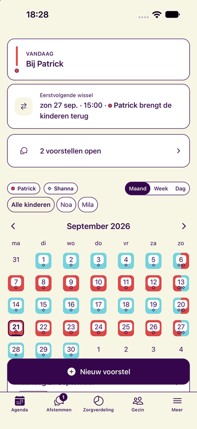
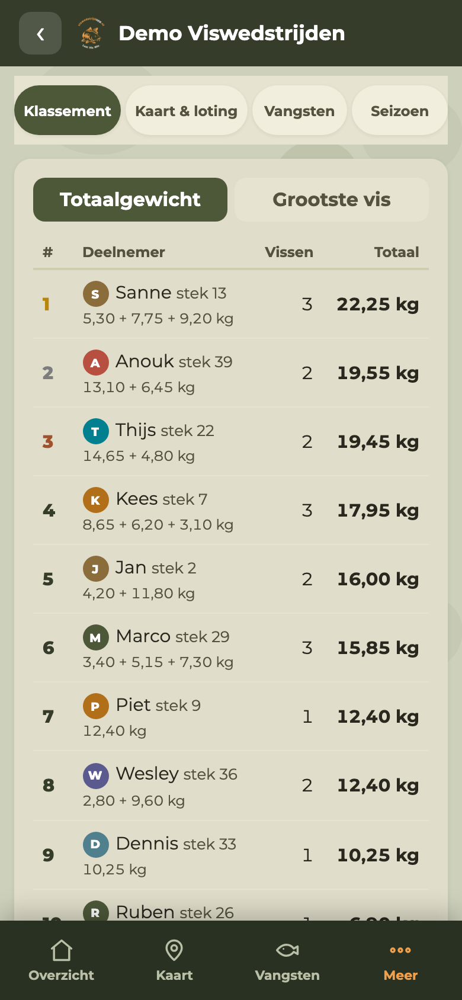

Co-ouderschap · iOS
TweeHuizen
Meer rust en overzicht in het co-ouderschap. Afspraken, het zorgrooster en vakanties samen op één plek.
Gedeelde agendaZorgverdelingVakantieplanning
Bekijk TweeHuizen ↗KemblincK ontwerpt en bouwt apps en webapps die het dagelijks leven eenvoudiger maken. Doordacht, toegankelijk en met persoonlijke aandacht.


Verschillende uitdagingen.
Dezelfde aandacht voor de oplossing.

Meer rust en overzicht in het co-ouderschap. Afspraken, het zorgrooster en vakanties samen op één plek.
Van de eerste loting tot de laatste vangst. Alles om wedstrijden te organiseren en iedereen te laten meeleven.
Een goede app begint bij begrijpen wat mensen nodig hebben. KemblincK vertaalt praktische vragen naar digitale producten die prettig werken. Van het eerste idee tot de details die dagelijks het verschil maken.
Vertel waar je aan denkt. Dan kijken we naar de mogelijkheden.
Liever direct mailen? info@kemblinck.nl